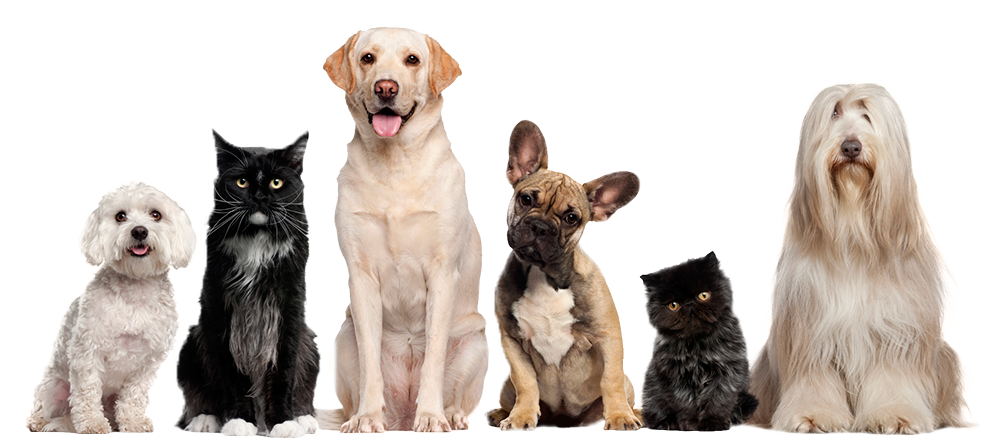
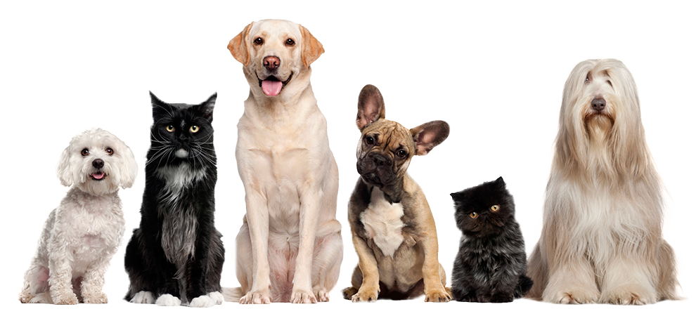

Welcome to the S.A.N.D. Animal Organization! We are committed on educating people about how to treat animal bites and offering vital resources to individuals and communities.
S.A.N.D. is committed to educate people about the risks associated with animal bites and the value of adopting safety procedures. It works to raise public knowledge of these dangers. We hope to lessen the occurrence of these kinds of occurrences by encouraging preventative measures and equipping people to act appropriately and promptly in the event that they do arise. Apart from promoting safer behaviors, we are dedicated to guaranteeing that all individuals, irrespective of their location or situation, may obtain the essential knowledge and medical attention needed to properly handle and treat animal bites. We genuinely think that information and education may help to create a culture where people feel empowered to defend themselves and their communities, and that knowledge is a vital instrument in fostering safer, more resilient societies.
S.A.N.D. is a four passionate students, Samantha Arago, Alliah Kaye Terrible, Claire Nayah Evangelista, and Denver Ollica, are bound together by a common goal of improving public health and animal welfare. We think that by educating people about the dangers of animal bites, we can shield people from avoidable injury and safeguard communities.
- Education: We provide clear, reliable information on how to prevent animal bites and what to do if occurs.
- Resources: Our website features guidelines for treatment, first aid steps, and locations of medical services.
- Community Engagement: We actively engage everyone to raise awareness and promote safe interactions with animals
Join Us!
Join us on our mission to create a safer environment for both humans and animals. Together, we can make a difference!

 
